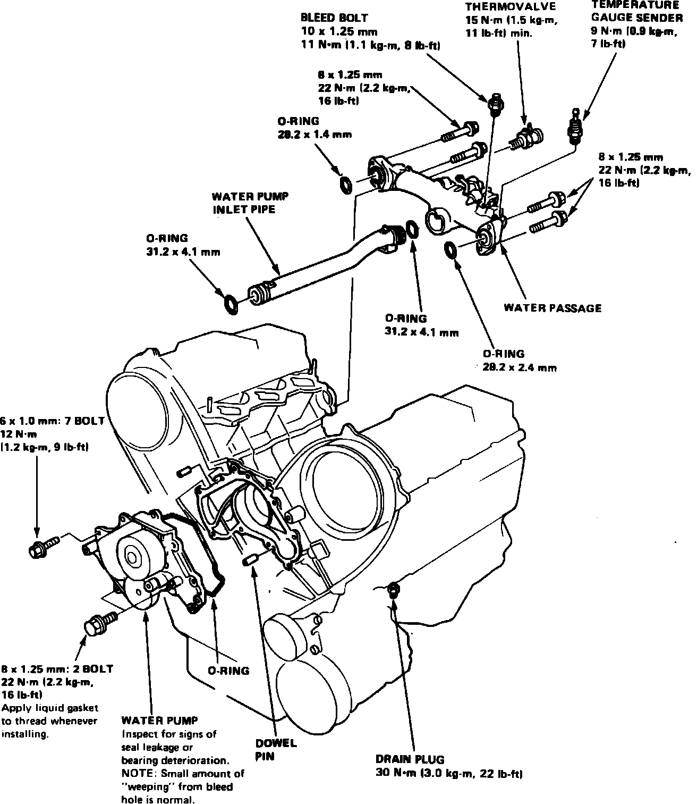

Removal
NOTE: Use new O-rings and new special bolts when reassembling.CAUTION: Wait until the engine has cooled down to prevent burns.
Fig. 45 Water pump replacement. Legend:

1. Drain the radiator coolant.
2. Turn crankshaft so No. 1 piston is at TDC.
3. Disable coded theft protection system as described under Accessories and Optional Equipment / Antitheft and Alarm Systems / Service and Repair.
4. Disarm airbag system as described under Air Bags and Seat Belts / Air Bags (Supplemental Restraint Systems) / Airbag System Disarming.
5. Remove engine electrical harness.
6. Remove breather pipe.
7. Remove vacuum pipe bracket.
8. Remove alternator, A/C and power steering belts.
9. Remove upper timing belt covers, Fig. 64.
10. Remove crankshaft pulley.
11. Remove A/C adjusting pulley.
12. Remove dipstick pipe.
13. Loosen timing belt adjusting bolt 180° to release belt tension.
14. Push tensioner to release tension, then remove belt from the pulleys.
15. Remove two mounting bolts from the thermostat case.
16. Remove special bolts, then remove the water pump.
CAUTION: Do not turn crankshaft or camshaft pulleys when the timing belt is off to prevent damage to the engine.